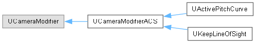
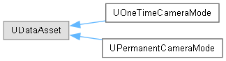
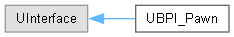

Advanced Camera System
1.0.1
A camera system for Unreal Engine
Toggle main menu visibility
Loading...
Searching...
No Matches
Class Hierarchy
Go to the textual class hierarchy



Generated by
1.17.0